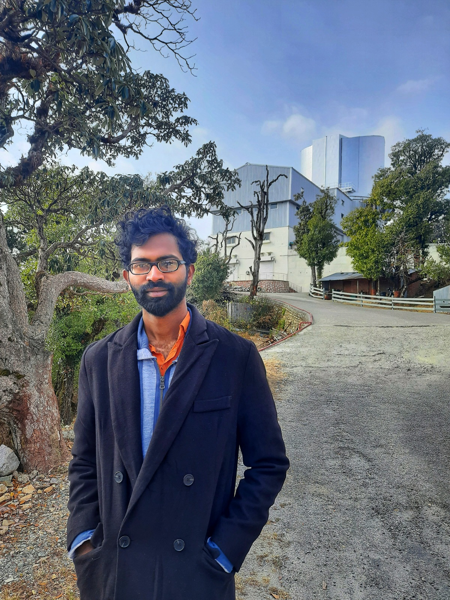

I am a visiting project student at the Aryabhatta Research Institute of observational Sciences (ARIES). I was born in Aurangabad, Maharashtra on August 15, 1997. I obtained my B.Sc. degree from the K J Somaiya College of Science & Commerce and M.Sc. degree from the Department of Physics, University of Mumbai ( UDP ). This website is my personal space where one may find articles/information related to my research, sometimes aimed for general understanding. Besides astronomy, I spend my time in watching movies, reading books, trekking and exploring to find or solve problems. I'd like to hear from people if they have any advice or some questions. You can use the social media buttons in the contact section.
The cumulative grade point average (CGPA) was 7.63/10. The final year dissertation was titled: X-ray Study of Active Galactic Nuclei (AGN).
I graduated in Physics with CGPA of 5.58/7
6 month internship project as part of Visiting Student Project. Project titled- Stellar activity of B, A and F-type stars. Supervised by: Dr. Santosh Joshi.
Dissertation titled- X-ray Study of Active Galactic Nuclei (AGN). as part of M Sc. Physics degree. Supervised by: Ass. Prof. Siddharth Kasthurirangan.
I am fluent in the usage of Python language for the general programming purposes. I use astropy affiliated packages like specutils and astroquery . I use GitHub for keeping the codes together and as it is also easier for other collabators to make changes and pull a branch with significant development. Moreever, I have some experience programming with C++ as well.
I use English, Hindi and Marathi as languages for communication. Marathi is my mother tongue, Hindi was learnt as I was always surrounded by Hindi speaking friends and English has been taught as a medium of instruction ever since I went to school. As a result, English is my primary language for all formal communications. Besides these three, I can also understand some basics of Gurajati, Bangla and Bhojpuri.
I have observed using the telescopes located at ARIES, namely, the 1.3m DFOT and 3.6m DOT .
Besides these telescopes, I have observed remotely using the network of 2.01-m Himalayan Chandra Telescope (HCT) Hanle, India. I have the experience of reducing and analysing the data obtained from these telescopes. We are developing an spectroscopy data reduction pipeline for 2-m IUCAA Girawali Observatory (IGO) and HCT , written in python. The details will be soon available here.
My research is currently focused on the stellar activity of ‘B, A and F’ type stars using TESS data to determine the pulsation frequency. I am also studying spectroscopic data of ‘Be’ stars taken from IGO by checking the line variation and we are also using synthetic spectra to find the physical parameters like Teff, projected rotational velocity, logg, etc.
I have started reducing the physical parameters from high-resolution spectroscopy using iSpec code with HERMES data.
Copyright © Ganesh Pawar. All rights reserved
Research